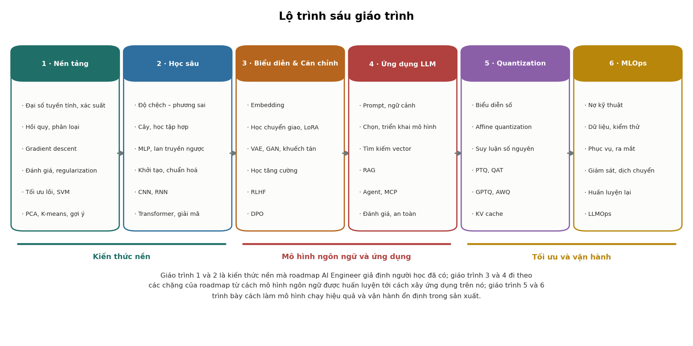

Lộ trình kỹ sư AI
Lộ trình
Lộ trình đi theo các chặng của roadmap AI Engineer trên roadmap.sh, bắt đầu bằng phần kiến thức nền mà roadmap đó giả định người học đã có: toán, học máy cổ điển, học sâu và cách mô hình ngôn ngữ được huấn luyện. 6 giáo trình được xếp thành 13 chặng với 84 bài đánh số liên tục.
Thứ tự này ít phải quay lại nhất, nhưng không bắt buộc: mỗi bài có liên kết tới đúng mục kiến thức cũ mà nó cần. Bảng đối chiếu ở cuối trang cho biết mỗi chủ đề của roadmap được trình bày ở đâu.
13 chặng · 84 bài · 88 hình sinh bằng mã · khoảng 14 giờ đọc

Chặng 1 · Nền tảng
Toán cho học máy
Đại số tuyến tính và xác suất ở đúng mức cần để đọc mọi chặng sau.
- 1Tổng quan về học máyChương 1 · Nền tảngĐịnh nghĩa học máy, ba thành phần của mọi thuật toán học có giám sát, các dạng bài toán, và quy trình giải một bài toán học máy.
- 2Đại số tuyến tínhChương 2 · Nền tảngHạng, tích vô hướng và siêu phẳng, chuẩn, trị riêng, ma trận xác định dương, SVD và đạo hàm theo vector, kèm nơi mỗi khái niệm được dùng.
- 3Xác suất và thống kêChương 3 · Nền tảngKỳ vọng, phương sai, ma trận hiệp phương sai, phân phối Gauss, định lý Bayes, và độ chệch – phương sai của một ước lượng.
Chặng 2 · Nền tảng, Học sâu
Học máy cổ điển
Hồi quy, phân loại, đánh giá mô hình, regularization, tối ưu lồi, SVM, học không giám sát, rồi so sánh các họ mô hình, phân rã độ chệch – phương sai, cây quyết định và phương pháp tập hợp.
- 4Hồi quy tuyến tínhChương 4 · Nền tảngBài toán bình phương tối thiểu, phương trình chuẩn, trường hợp ma trận suy biến, đa cộng tuyến và các giả định của mô hình.
- 5Gradient descentChương 5 · Nền tảngThuật toán gradient descent, tốc độ hội tụ theo số điều kiện, cách chọn tốc độ học, kiểm tra gradient bằng sai phân và các biến thể SGD, mini-batch.
- 6Phân loại tuyến tínhChương 6 · Nền tảngPerceptron, hồi quy logistic và hồi quy softmax: cùng một mô hình tuyến tính, khác nhau ở hàm mất mát.
- 7k láng giềng gần nhất và Naive BayesChương 7 · Nền tảngMô hình phân biệt và mô hình sinh, thuật toán k-NN và lời nguyền số chiều, Naive Bayes, và quan hệ giữa Naive Bayes, LDA, QDA.
- 8Đánh giá mô hình phân loạiChương 8 · Nền tảngMa trận nhầm lẫn, precision, recall, F1, đường cong ROC và precision–recall, đánh giá nhiều lớp và rò rỉ dữ liệu.
- 9Overfitting và regularizationChương 9 · Nền tảngOverfitting và underfitting, hồi quy ridge, ridge nhìn qua SVD, lasso và nghiệm thưa, cross-validation.
- 10Ước lượng hợp lý cực đại và hậu nghiệm cực đạiChương 10 · Nền tảngMLE cho ra bình phương sai số và cross-entropy; MAP cho ra regularization, với ridge trùng MAP khi tiên nghiệm là Gauss.
- 11Tập lồi và hàm lồiChương 11 · Nền tảngĐịnh nghĩa tập lồi và hàm lồi, điều kiện bậc nhất và bậc hai, các phép toán bảo toàn tính lồi, và ảnh hưởng của tính lồi tới gradient descent.
- 12Tối ưu lồi và đối ngẫu LagrangeChương 12 · Nền tảngHàm Lagrange, hàm đối ngẫu, đối ngẫu yếu và mạnh, điều kiện Slater và KKT, minh hoạ bằng một ví dụ tính tay xuyên suốt.
- 13Máy vector hỗ trợChương 13 · Nền tảngSVM lề cứng và lề mềm, bài toán đối ngẫu và vector hỗ trợ, mối liên hệ với mất mát hinge, kernel và chi phí tính toán.
- 14Giảm chiều dữ liệuChương 14 · Nền tảngPhân tích thành phần chính, định lý Eckart–Young, hạn chế của PCA khi có nhãn, và phân tích biệt thức tuyến tính (LDA).
- 15Phân cụm K-meansChương 15 · Nền tảngThuật toán Lloyd, khởi tạo k-means++, các giả định ngầm về hình dạng cụm, và cách chọn số cụm.
- 16Hệ thống gợi ýChương 16 · Nền tảngLọc cộng tác bằng phân rã ma trận và ALS, lượng dữ liệu cần thiết, chọn hạng, và vấn đề khởi đầu lạnh.
- 17Các họ mô hìnhChương 1 · Học sâuBốn câu hỏi khi thiết kế một mô hình, so sánh mô hình tuyến tính, cây, mạng nơ-ron và Transformer, vì sao cây vẫn mạnh trên dữ liệu dạng bảng, và khái niệm thiên kiến quy nạp.
- 18Độ chệch và phương saiChương 2 · Học sâuChứng minh phân rã độ chệch – phương sai, đo từng thành phần trên 250 tập huấn luyện mô phỏng, chẩn đoán bằng đường cong học, và hiện tượng double descent.
- 19Cây quyết định và phương pháp tập hợpChương 3 · Học sâuCây quyết định và cách chọn phép chia, bagging và rừng ngẫu nhiên giảm phương sai, gradient boosting giảm độ chệch, kèm số đo trên cùng bài toán và các siêu tham số quan trọng.
Chặng 3 · Học sâu
Học sâu
Mạng nơ-ron nhiều lớp, lan truyền ngược và các thuật toán tối ưu, khởi tạo, chuẩn hoá, kết nối tắt, mạng tích chập, phát hiện đối tượng và phân đoạn ảnh, mạng hồi quy.
- 20Mạng nơ-ron nhiều lớpChương 4 · Học sâuVì sao cần hàm kích hoạt phi tuyến, các hàm kích hoạt thông dụng, định lý xấp xỉ phổ quát, và một phép dựng cho thấy độ sâu tiết kiệm số tham số theo cấp số mũ.
- 21Lan truyền ngược và các thuật toán tối ưuChương 5 · Học sâuLan truyền ngược và lý do nó rẻ, bộ nhớ cho giá trị kích hoạt, SGD, momentum, Adam và hiệu chỉnh độ chệch, AdamW, lịch tốc độ học, và một ví dụ tính tay đầy đủ.
- 22Khởi tạo, chuẩn hoá và kết nối tắtChương 6 · Học sâuSuy ra khởi tạo Xavier và He, đo gradient qua mạng 40 lớp với sáu cách dựng lớp, BatchNorm, LayerNorm và RMSNorm, kết nối tắt, dropout và các phương pháp regularization khác.
- 23Mạng nơ-ron tích chậpChương 7 · Học sâuPhép tích chập, kích thước đầu ra, số tham số và số phép tính, trường tiếp nhận, các khối thường dùng, CNN so với Vision Transformer, phát hiện đối tượng (IoU, hộp neo, NMS, AP) và phân đoạn ảnh (FCN, U-Net, Mask R-CNN).
- 24Mạng nơ-ron hồi quyChương 8 · Học sâuRNN và lan truyền ngược theo thời gian, đo gradient tiêu biến và bùng nổ, LSTM và vai trò của cổng quên, GRU, và giới hạn về tính song song khiến Transformer thay thế RNN.
Chặng 4 · Học sâu
Transformer và mô hình ngôn ngữ
Attention, ba kiểu kiến trúc Transformer, các cải tiến hiện nay như RoPE, GQA và FlashAttention, các chiến lược giải mã, và cách ước lượng tham số, FLOP, bộ nhớ.
- 25Attention và TransformerChương 9 · Học sâuScaled dot-product attention, chứng minh và đo lý do chia cho √dₖ, attention nhiều đầu, mặt nạ, cấu trúc một khối Transformer, mã hoá vị trí và ba kiểu kiến trúc encoder, decoder, encoder–decoder.
- 26Các cải tiến của TransformerChương 10 · Học sâuPre-LN, RoPE, MQA và GQA, SwiGLU, mixture of experts và FlashAttention: mỗi thay đổi kèm vấn đề nó giải quyết và cái giá của nó.
- 27Các chiến lược giải mãChương 11 · Học sâuGreedy, beam search, nhiệt độ, top-k và top-p, đo tác động lên một phân phối đuôi dài, vì sao beam search kém với văn bản mở, và các vấn đề giải mã trong hệ thống thực tế.
- 28Tham số, FLOP và bộ nhớ của TransformerChương 12 · Học sâuCông thức 12Ld², C ≈ 6ND và bộ nhớ khi huấn luyện, suy luận; kiểm chứng khớp chính xác với số tham số của GPT-2 và Llama 2, và ngân sách huấn luyện Llama 2 7B.
Chặng 5 · Biểu diễn & Căn chỉnh
Biểu diễn, học chuyển giao và mô hình sinh
Embedding, vì sao tiền huấn luyện hiệu quả, tinh chỉnh và LoRA, VAE, GAN và mô hình khuếch tán.
- 29Tổng quanChương 1 · Biểu diễn & Căn chỉnhBốn nhóm kỹ thuật của giáo trình, embedding, học chuyển giao, mô hình sinh và căn chỉnh, đặt theo thứ tự một mô hình ngôn ngữ được xây dựng.
- 30Word2VecChương 2 · Biểu diễn & Căn chỉnhTừ số lần đồng hiện tới PMI, nén bằng SVD, skip-gram và lấy mẫu âm, chứng minh skip-gram phân rã ma trận PMI, kèm số đo trên một kho ngữ liệu nhân tạo có cấu trúc hai trục.
- 31Hình học của không gian embeddingChương 3 · Biểu diễn & Căn chỉnhTính bất đẳng hướng làm cosine giữa hai vector ngẫu nhiên lên tới 0,87, cách khắc phục bằng trừ trung bình, làm trắng và học tương phản, và vì sao từng chiều của embedding không có nghĩa riêng.
- 32Embedding theo ngữ cảnh và tìm kiếm vectorChương 4 · Biểu diễn & Căn chỉnhGiới hạn của embedding tĩnh, embedding theo ngữ cảnh và học tương phản với mẫu âm trong lô, tìm kiếm láng giềng gần đúng, và cách đánh giá hệ thống tìm kiếm vector.
- 33Tiền huấn luyệnChương 5 · Biểu diễn & Căn chỉnhVì sao học tự giám sát trên dữ liệu không nhãn hiệu quả, vì sao dự đoán token tiếp theo dạy được nhiều kỹ năng, bốn cách tái sử dụng mô hình, và giới hạn của tiền huấn luyện.
- 34Đóng băng và tinh chỉnhChương 6 · Biểu diễn & Căn chỉnhThí nghiệm có kiểm soát so sánh đóng băng, tinh chỉnh toàn phần và huấn luyện từ đầu theo số mẫu có nhãn, giới hạn trên khi đặc trưng bị cố định, và các quy tắc thực hành khi tinh chỉnh.
- 35LoRA và tinh chỉnh tiết kiệm tham sốChương 7 · Biểu diễn & Căn chỉnhChi phí bộ nhớ của tinh chỉnh toàn phần, LoRA và giả định hạng thấp, phép đếm tham số và bộ nhớ cho Llama 2, lợi ích khi phục vụ nhiều adapter, và các phương pháp cùng họ như QLoRA.
- 36Mô hình sinhChương 8 · Biểu diễn & Căn chỉnhBài toán sinh, vì sao hằng số chuẩn hoá ngăn áp dụng trực tiếp hợp lý cực đại, và so sánh mô hình tự hồi quy, VAE, GAN và mô hình khuếch tán.
- 37Bộ tự mã hoá biến phânChương 9 · Biểu diễn & Căn chỉnhSuy ra chặn dưới ELBO, mẹo tái tham số hoá, thí nghiệm cho thấy β quyết định số chiều ẩn còn mang thông tin và hiện tượng sụp hậu nghiệm, và vì sao mẫu của VAE thường mờ.
- 38Mạng đối sinhChương 10 · Biểu diễn & Căn chỉnhBài toán minimax và bộ phân biệt tối ưu, vì sao dạng gốc của hàm mất mát cho bộ sinh không học được, kết quả đo về độ phủ các chế độ, và các khó khăn khi huấn luyện GAN.
- 39Mô hình khuếch tánChương 11 · Biểu diễn & Căn chỉnhQuá trình thuận và dạng đóng của nó kiểm chứng bằng mô phỏng, lịch nhiễu và tỉ số tín hiệu trên nhiễu, huấn luyện bằng hồi quy dự đoán nhiễu, tăng tốc lấy mẫu và sinh có điều kiện.
Chặng 6 · Biểu diễn & Căn chỉnh
Căn chỉnh mô hình
Học tăng cường, gradient chính sách, RLHF và DPO: cách một mô hình ngôn ngữ học làm theo ý người dùng.
- 40Nhập môn học tăng cườngChương 12 · Biểu diễn & Căn chỉnhTrạng thái, hành động, phần thưởng, phương trình Bellman và Q-learning, cùng thí nghiệm cho thấy cách khởi tạo hàm giá trị cũng là một cơ chế khám phá.
- 41Gradient chính sáchChương 13 · Biểu diễn & Căn chỉnhĐịnh lý gradient chính sách và REINFORCE, vì sao đường nền giảm phương sai mà không đổi kỳ vọng, số đo cho thấy độ lệch chuẩn giảm khoảng 2,3 lần, hàm lợi thế và PPO.
- 42Học tăng cường từ phản hồi của con ngườiChương 14 · Biểu diễn & Căn chỉnhBa giai đoạn huấn luyện một trợ lý, vì sao học từ so sánh vượt được học bắt chước, mô hình thưởng Bradley–Terry, và nghiệm dạng đóng của bài toán có ràng buộc KL kiểm chứng bằng số.
- 43Tối ưu trực tiếp theo sở thích (DPO)Chương 15 · Biểu diễn & Căn chỉnhSuy ra hàm mất mát DPO từ nghiệm của RLHF, kiểm chứng DPO cho cùng chính sách với RLHF hai bước tới 4,2 × 10⁻⁸, so sánh hai cách và các phương pháp ra đời sau.
Chặng 7 · Ứng dụng LLM
Làm việc với mô hình ngôn ngữ
Kỹ sư AI làm gì, token và chi phí, chọn và triển khai mô hình, prompt engineering, context engineering.
- 44Kỹ sư AIChương 1 · Ứng dụng LLMCông việc của kỹ sư AI, khác biệt với kỹ sư học máy, phát triển dựa trên đánh giá, các thuật ngữ cơ bản và cấu trúc của một ứng dụng dùng LLM.
- 45Mô hình ngôn ngữ lớn nhìn từ phía ứng dụngChương 2 · Ứng dụng LLMToken và tokenizer đo trên văn bản tiếng Việt, cửa sổ ngữ cảnh và KV cache, tham số lấy mẫu, các giai đoạn huấn luyện, độ trễ, chi phí và các giới hạn cố hữu.
- 46Chọn và triển khai mô hìnhChương 3 · Ứng dụng LLMMô hình gốc, chỉ dẫn và suy luận; mô hình đóng và mở trọng số; tính bộ nhớ khi tự triển khai; Hugging Face, Ollama, LM Studio, vLLM; gọi API; quy trình chọn mô hình.
- 47Prompt engineeringChương 4 · Ứng dụng LLMCấu trúc của một prompt, zero-shot và few-shot, chain-of-thought, đầu ra có cấu trúc, function calling, prompt caching, streaming và quản lý prompt trong mã nguồn.
- 48Context engineeringChương 5 · Ứng dụng LLMQuản lý toàn bộ ngữ cảnh ở mỗi lần gọi: nguồn ngữ cảnh, ngân sách token, thí nghiệm tìm dữ kiện theo vị trí trong ngữ cảnh dài, bộ nhớ, cô lập ngữ cảnh và các kiểu hỏng.
Chặng 8 · Ứng dụng LLM
Truy xuất và RAG
Embedding trong thực tế, cơ sở dữ liệu vector và retrieval-augmented generation, đo trên văn bản tiếng Việt.
- 49Embedding và tìm kiếm ngữ nghĩaChương 6 · Ứng dụng LLMEmbedding văn bản và huấn luyện tương phản, chọn mô hình, độ tương đồng, ứng dụng, và thí nghiệm so sánh BM25, LSA, e5-small và tìm kiếm kết hợp trên văn bản tiếng Việt.
- 50Cơ sở dữ liệu vectorChương 7 · Ứng dụng LLMChi phí tìm kiếm chính xác, chỉ mục IVF, product quantization, đồ thị láng giềng và HNSW đo trên cùng dữ liệu, lọc theo metadata, và cách chọn công cụ.
- 51Retrieval-Augmented GenerationChương 8 · Ứng dụng LLMKhi nào dùng RAG, quy trình lập chỉ mục và trả lời, chia đoạn, cải thiện truy xuất, thí nghiệm RAG trả lời trắc nghiệm, đánh giá và các cách hiện thực.
Chặng 9 · Ứng dụng LLM
Agent và MCP
Function calling, ReAct, hệ nhiều agent, độ tin cậy của agent, và Model Context Protocol.
- 52AgentChương 9 · Ứng dụng LLMAgent và workflow, function calling, ReAct, lập kế hoạch và bộ nhớ, hệ nhiều agent, phân tích độ tin cậy của agent nhiều bước, và cách xây một agent.
- 53Model Context ProtocolChương 10 · Ứng dụng LLMBài toán tích hợp, kiến trúc host, client, server, tools, resources và prompts, JSON-RPC và thiết kế phi trạng thái của đặc tả 2026-07-28, xây server và các rủi ro an toàn.
Chặng 10 · Ứng dụng LLM
An toàn, đánh giá và quan sát
Prompt injection và các rủi ro trong danh sách OWASP, đánh giá có cơ sở thống kê, kiểm thử hồi quy, trace và giám sát.
- 54An toàn và đạo đứcChương 11 · Ứng dụng LLMOWASP Top 10 cho ứng dụng LLM, thí nghiệm prompt injection gián tiếp với bốn cách viết prompt, dữ liệu nhạy cảm, thiên kiến và công bằng, rào chắn và các thực hành an toàn.
- 55Đánh giá ứng dụng LLMChương 12 · Ứng dụng LLMBa loại đánh giá, các thước đo, cần bao nhiêu câu hỏi để một kết luận đáng tin, so sánh ghép cặp bằng kiểm định McNemar, và kiểm thử hồi quy.
- 56Quan sát và vận hànhChương 13 · Ứng dụng LLMNhững gì cần ghi lại, trace và span theo OpenTelemetry, theo dõi chi phí và độ trễ, giám sát chất lượng trong sản xuất và quyền riêng tư của log.
Chặng 11 · Ứng dụng LLM
Đa phương thức và công cụ phát triển
Ảnh, video, tiếng nói trong ứng dụng LLM, và các công cụ lập trình có hỗ trợ AI.
- 57AI đa phương thứcChương 14 · Ứng dụng LLMCác bài toán đa phương thức, cách mô hình ngôn ngữ đọc ảnh và vì sao ảnh tốn token, video, sinh ảnh, nhận dạng và tổng hợp tiếng nói.
- 58Công cụ lập trình có hỗ trợ AIChương 15 · Ứng dụng LLMCác loại công cụ, bằng chứng từ hai thí nghiệm có đối chứng về hiệu quả, và cách dùng an toàn.
Chặng 12 · Quantization
Tối ưu suy luận
Lượng tử hoá: biểu diễn số, suy luận bằng số nguyên, PTQ, QAT, và các phương pháp riêng cho LLM.
- 59Vì sao cần quantizationChương 1 · QuantizationBốn động cơ: bộ nhớ, năng lượng, tốc độ và cái giá phải trả. Vì sao di chuyển dữ liệu đắt hơn tính toán hàng trăm lần.
- 60Máy tính biểu diễn sốChương 2 · QuantizationSố nguyên bù hai, IEEE 754, FP16/BF16/FP8. Khác biệt cốt lõi: độ chính xác tương đối so với tuyệt đối.
- 61Uniform affine quantizationChương 3 · QuantizationSuy ra công thức S và Z từ đầu, ví dụ tính tay đầy đủ, lượng tử đối xứng so với bất đối xứng.
- 62Phân tích sai sốChương 4 · QuantizationMô hình nhiễu đều, quy tắc mỗi bit đáng giá 6 dB, và đánh đổi giữa sai số làm tròn với sai số cắt.
- 63Độ mịn (granularity)Chương 5 · QuantizationPer-tensor, per-channel, per-group. Vì sao scale chỉ được đặt trên trục không bị lấy tổng.
- 64Suy luận bằng số nguyênChương 6 · QuantizationKhai triển phép nhân ma trận đã lượng tử, bias int32, requantization bằng số học dấu chấm tĩnh.
- 65Lượng tử cả một mạngChương 7 · QuantizationLượng tử cái gì, nút fake-quant, gộp BatchNorm vào tích chập và gộp chuỗi lớp.
- 66CalibrationChương 8 · QuantizationNăm cách chọn dải cho activation — min–max, EMA, percentile, MSE, KL — và một thí nghiệm so sánh trung thực.
- 67PTQ và QATChương 9 · QuantizationStraight-Through Estimator, LSQ, so sánh theo độ rộng bit, và nhóm kỹ thuật PTQ nâng cao: CLE, bias correction, AdaRound.
- 68PyTorch và TFLiteChương 10 · QuantizationMã đã chạy thật: eager mode, QAT, PT2E/torchao, LiteRT, và cách đo kích thước – độ trễ – độ chính xác cho đáng tin.
- 69Quantization cho LLMChương 11 · QuantizationOutlier có hệ thống, LLM.int8(), SmoothQuant, GPTQ, AWQ, NF4/QLoRA, FP8 và microscaling, lượng tử KV cache.
- 70Quy trình làm việcChương 12 · QuantizationSơ đồ chọn phương pháp, phân tích độ nhạy theo lớp, và danh sách kiểm tra tám mục trước khi triển khai.
- 71Những hiểu lầm thường gặpChương 13 · QuantizationChín phát biểu nghe rất hợp lý nhưng sai, kèm đính chính có dẫn chứng từ chính các thí nghiệm trong tài liệu.
Chặng 13 · MLOps
Vận hành hệ thống học máy
Dữ liệu, kiểm thử, phục vụ, ra mắt, giám sát, dịch chuyển phân phối, huấn luyện lại và LLMOps.
- 72Nợ kỹ thuật của hệ thống học máyChương 1 · MLOpsVì sao hệ thống học máy hỏng một cách im lặng: nguyên lý CACE, các dạng nợ kỹ thuật theo Sculley và cộng sự (2015), và cách đọc đúng nhận định về 5% mã học máy.
- 73Vòng đời và mức độ tự động hoáChương 2 · MLOpsVòng đời của hệ thống học máy là một vòng lặp; ba yếu tố tốc độ, kiểm định, phiên bản; ba mức tự động hoá của Google Cloud; huấn luyện liên tục so với CI/CD.
- 74Dữ liệu: hợp đồng, kiểm định và các loại lỗiChương 3 · MLOpsBa loại lỗi dữ liệu (cứng, mềm, dịch chuyển) và cách phản ứng với từng loại; hợp đồng dữ liệu bốn tầng; độ trễ nhãn; ba mức phiên bản hoá dữ liệu.
- 75Đặc trưng và tính đúng theo thời điểmChương 4 · MLOpsLệch giữa huấn luyện và phục vụ, rò rỉ thông tin tương lai, ghép theo thời điểm bằng SQL, ba thành phần của kho đặc trưng và khi nào không cần nó.
- 76Thí nghiệm lặp lại đượcChương 5 · MLOpsTái lập, tái tạo và tính bền; sáu nhóm yếu tố phải cố định khi huấn luyện; theo dõi thí nghiệm; sổ đăng ký mô hình và thẻ mô hình.
- 77Đánh giá mô hình cho sản xuấtChương 6 · MLOpsChỉ số ngoại tuyến và chỉ số sản phẩm, thí nghiệm đánh giá theo lát cắt (tổng thể tăng 19,8 điểm, một nhóm giảm 11,6 điểm), kiểm thử hành vi, và 28 mục của ML Test Score.
- 78Đóng gói và phục vụ mô hìnhChương 7 · MLOpsBa chế độ phục vụ, ngân sách độ trễ, phân vị cao của độ trễ khi một yêu cầu toả ra nhiều dịch vụ, và cách đóng gói để môi trường huấn luyện khớp môi trường phục vụ.
- 79Chiến lược ra mắtChương 8 · MLOpsShadow, canary, blue–green và A/B test trả lời những câu hỏi khác nhau; công thức cỡ mẫu cho A/B test; năm lỗi thống kê thường gặp.
- 80Dịch chuyển phân phốiChương 9 · MLOpsCovariate shift, label shift và concept drift; thí nghiệm cho thấy concept drift không phát hiện được từ X; các phép kiểm tra; PSI và vì sao ngưỡng 0,25 phụ thuộc cỡ mẫu.
- 81Giám sát và cảnh báoChương 10 · MLOpsChỉ số vận hành và chỉ số riêng của học máy, bốn lớp giám sát, độ lệch dự đoán, giới hạn hành động, nguyên tắc thiết kế cảnh báo, và ngưỡng cố định trong hệ thống thay đổi.
- 82Huấn luyện lạiChương 11 · MLOpsThí nghiệm đo mức suy giảm của mô hình theo thời gian, bốn loại kích hoạt huấn luyện lại, huấn luyện lại từ đầu so với cập nhật mô hình cũ, và các bước kiểm định của pipeline tự động.
- 83Vòng phản hồiChương 12 · MLOpsVòng phản hồi trực tiếp và ẩn, vòng phản hồi thoái hoá trong hệ thống gợi ý, mô phỏng đo thiệt hại và tác dụng của ngẫu nhiên hoá, các cách phát hiện và khắc phục.
- 84LLMOpsChương 13 · MLOpsNhững gì thay đổi khi dùng mô hình ngôn ngữ lớn: đánh giá ba tầng, thiên lệch của giám khảo LLM, vận hành hệ thống RAG, chi phí và độ trễ theo token, rào chắn, phiên bản hoá.
Đối chiếu với roadmap AI Engineer
Mỗi chủ đề lớn của roadmap và nơi nó được trình bày trong lộ trình.
| Chủ đề trên roadmap | Nội dung | Ở đâu |
|---|---|---|
| Introduction | Kỹ sư AI là gì, vai trò, AI Engineer và ML Engineer, thuật ngữ chung | Chương 1 Ứng dụng LLM |
| How LLMs Work | Token, cửa sổ ngữ cảnh, tham số lấy mẫu, huấn luyện và suy luận | Chương 2 Ứng dụng LLMChương 9 Học sâuChương 11 Học sâuChương 12 Học sâu |
| Prompt Engineering | Cấu trúc prompt, zero-shot, few-shot, chain-of-thought, đầu ra có cấu trúc, prompt caching | Chương 4 Ứng dụng LLM |
| Context Engineering | Nguồn ngữ cảnh, ngân sách token, bộ nhớ, cô lập ngữ cảnh, các kiểu hỏng | Chương 5 Ứng dụng LLM |
| Type of Models | Mô hình gốc, chỉ dẫn, suy luận; đóng và mở trọng số; tự triển khai | Mục 3.1 Ứng dụng LLMMục 3.2 Ứng dụng LLMMục 3.3 Ứng dụng LLM |
| Hugging Face | Hub, model card, Tasks, Transformers, Transformers.js | Mục 3.4 Ứng dụng LLM |
| Choosing the Right Model | Ràng buộc, chất lượng trên dữ liệu của mình, độ trễ, chi phí, định tuyến | Mục 3.6 Ứng dụng LLM |
| Ollama, LM Studio, OpenRouter | Chạy mô hình cục bộ, API tương thích OpenAI, dịch vụ trung gian | Mục 3.3 Ứng dụng LLMMục 3.5 Ứng dụng LLM |
| Fine-tuning | Đóng băng hay tinh chỉnh, LoRA và các phương pháp tiết kiệm tham số | Chương 6 Biểu diễn & Căn chỉnhChương 7 Biểu diễn & Căn chỉnh |
| What are Embeddings | Embedding từ, embedding theo ngữ cảnh, embedding văn bản cho tìm kiếm | Chương 2 Biểu diễn & Căn chỉnhChương 4 Biểu diễn & Căn chỉnhChương 6 Ứng dụng LLM |
| Embedding Models | Chọn mô hình embedding, số chiều, độ dài tối đa, tiền tố, MTEB | Mục 6.2 Ứng dụng LLM |
| Vector Databases | IVF, product quantization, HNSW, lọc theo metadata, chọn công cụ | Chương 7 Ứng dụng LLM |
| What are RAGs? | Quy trình RAG, chia đoạn, tìm kiếm kết hợp, xếp lại, đánh giá RAG | Chương 8 Ứng dụng LLM |
| AI Agents | Workflow và agent, function calling, ReAct, hệ nhiều agent, độ tin cậy | Chương 9 Ứng dụng LLM |
| Model Context Protocol (MCP) | Host, client, server; tools, resources, prompts; truyền tải; an toàn | Chương 10 Ứng dụng LLM |
| AI Safety and Ethics | Prompt injection, dữ liệu nhạy cảm, thiên kiến và công bằng, rào chắn | Chương 11 Ứng dụng LLM |
| LLM Observability | Trace, span, chi phí và độ trễ, giám sát trong sản xuất | Chương 13 Ứng dụng LLMChương 13 MLOps |
| LLM Evaluations | Đánh giá tất định, dựa trên mô hình, bởi con người; cỡ mẫu và so sánh ghép cặp | Chương 12 Ứng dụng LLMChương 13 MLOps |
| Regression Testing | Bộ vàng, cửa kiểm tra trong CI, đổi phiên bản mô hình | Mục 12.5 Ứng dụng LLM |
| Multimodal AI | Hiểu ảnh, sinh ảnh, video, nhận dạng và tổng hợp tiếng nói | Chương 14 Ứng dụng LLMChương 11 Biểu diễn & Căn chỉnh |
| Development Tools | Công cụ lập trình có hỗ trợ AI và cách dùng an toàn | Chương 15 Ứng dụng LLM |
Tra cứu trong từng giáo trình
Ký hiệu, bài tập, câu hỏi phỏng vấn, tài liệu tham khảo và phụ lục.
Nền tảng
Học sâu
Biểu diễn & Căn chỉnh
Ứng dụng LLM